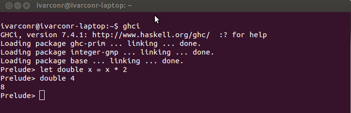

.center.middle # The Haskell Programming Language (Based on Seven Languages in Seven Weeks) ### Part 1 - Presented by Ivar --- # Agenda - part1 1. History 1. What is Haskell? 2. Basics - Primitive types 3. Functions 4. Recursion 5. Control structures 6. Tuples 7. Lists 8. Ranges 9. List Comprehension --- # History - _Haskell Brooks Curry_ - His work in mathematical logic serves as a foundation for functional languages. - A group from the Functional Programming Languages and Computer Architecture conference in 1987 - open standard for a pure functional language - Haskell was built to be a _pure_ functional programming languages - Special focus on lazy processing - Haskell was born 1990 --- # What is Haskell? - Functional - evaluating expressions - avoids using mutable state - first-class functions - Strong Static typing - Implicitly typed - Lazy processing - Lambda expressions --- # Basics - Primitive types ### Numbers > 3 * 5 15 > 4 ^ 2 - 1 15 > (1 - 5)^(3 * 2 - 4) 16 ### Character Data > "hello" "hello" > "hello" ++ " world" "hello world" > ['h','i'] "hi" ## Booleans > (4 + 5) == 9 True > (5 + 5) /= 10 False --- # Functions - The centerpart of Haskell - All functions takes only _one_ argument Can be defined directly in console: let double x = x * 2 Defined in two parts: 1. (*optinal*) type specification 2. Implementation `double.hs`: module Main where double :: Integer -> Integer double x = x * 2 --- # Functions, only one argument? - What about adding two numbers? - **Solution**: function currying - `add e1 e2` is equivalent to `(add e1) e2` ### Add function: add :: Integer -> Integer -> Integer add x y = x + y --- # Recursion - Sum of all natrual numbers - Pattern matching to end the recursive calls, haskell take the first match sum :: Integer -> Integer sum 0 = 0 sum x = x + sum (x - 1) --- # Control structures ### If/then/else `if <condition> then <true-value> else <false-value>` - In Haskell _if_ is an expression (not a statement) - else is required describeLetter :: Char -> String describeLetter c = if c >= 'a' && c <= 'z' then "Lower case" else if c >= 'A' && c <= 'Z' then "Upper case" else "Not an ASCII letter" --- # Control structures ### Guards - Restricts the value of the arguments - When a guard is satisfied Haskell calls the appropriate function describeLetter :: Char -> String describeLetter c | c >= 'a' && c <= 'z' = "Lower case" | c >= 'A' && c <= 'Z' = "Upper case" | otherwise = "Not an ASCII letter" Can replace pattern matching: sumG :: Integer -> Integer sumG x | x > 0 = x + sumG (x - 1) | otherwise = 0 --- # Tuples - A collection of a *fixed* number of *items* - Comma separated items in parantheses - Example: `(1, "hello", True)` - Can have tuples in tuples: '((0, 2), (1, 2), True)` ### Retrieving values: fst (1, 2) > 1 //Definition fst :: (a, b) -> a fst (a,b) = a --- # Lists Collection of items of *same* type let numbers = [1,2,3,4] let strings = ["hei", "hello", "Hola"] (:) operator: let numbers = [1,2,3,4] 0:numbers > [0,1,2,3,4] 0:4:numbers > [0,4,1,2,3,4] --- # Traversing lists head [1,2,3] > 1 tail [1,2,3] > [2,3] //binding list to (h:t) let (h:t) = [1,2,3] Finding the size of a list: size [] = 0 size (h:t) = 1 + size t --- # Combining lists - *zip* is a powerful way to combine lists - combines nth elements of each of the lists - great for storing information which is related to another bit of data zip ["ivar", "ole"] [20, 30] > [("ivar",20),("ole",30)] ### Candidate with highest score? maximum (zip ["ivar", "ole"] [20, 30]) > ("ole", 30) --- # Ranges [1..2] > [1,2] [1..4] > [1,2,3,4] [10, 8 .. 4] > [10,8,6,4] //Can also work in fractional numbers [10, 9.5, .. 4] (Sequences are unbound ranges, [1..]) --- # List Comprehension *A way to create **new** lists based on **existing** lists* Double all values: [x*2 | x <- [1..10]] > [2,4,6,8,10,12,14,16,18,20] Only even numbers: [x*2 | x <- [1..10], even x] > [4,8,12,16,20] Generate tuples: [(x,y) | x <- [1..10], y <- [1..10]] > [(1,1),(1,2),(1,3),(1,4),(1,5),(1,6),(1,7),(1,8),(1,9),(1,10),(2,1)... --- # Using the console - Start ghci. - **let** used to assign functions in local scope: `let double x = x * 2`  --- # Define and load Haskell source files *add.hs:* module Main where add :: Integer -> Integer -> Integer add x y = x + y **In console:** Prelude> :load "add.hs" [1 of 1] Compiling Main ( add.hs, interpreted ) Ok, modules loaded: Main. *Main> add 2 3 5 --- # Tasks ### In console: 1. Define a function *tripple* which multiply the argument with 3. - E.g `tripple 3` should be 9. 2. Use list comprehension to generate a list of all even numbers from 10..20 ### In seperate files: 1. Create a function that returns the third value in a tuple. - E.g. `thr (1, 2, 3)` should return 3 2. Create function sumList used to calculate the sum of the values in a list - E.g `sumList [1,3,4]` should return 8